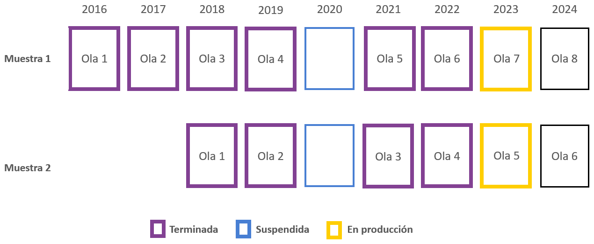

Capítulo 1 Presentación del estudio
1.1 Sobre COES
El Centro de Estudios de Conflicto y Cohesión Social (COES) desarrolla investigación colaborativa en temas relacionados al conflicto social y la cohesión (convivencia) en Chile, por medio de un equipo multidisciplinario proveniente de las ciencias sociales y humanidades. COES centra sus actividades académicas y de difusión en el análisis de las múltiples manifestaciones del conflicto y cohesión social en Chile, sus causas, así como también su contexto cultural e histórico.
COES está patrocinado por la Universidad de Chile y la Pontificia Universidad Católica de Chile, y como instituciones asociadas se encuentran la Universidad Diego Portales y la Universidad Adolfo Ibáñez. COES cuenta con el apoyo del Fondo de Financiamiento de Centros de Investigación en Áreas Prioritarias (FONDAP, dependiente de la Agencia Nacional de Investigación y Desarrollo (ANID) del Ministerio de Ciencia, Tecnología, Conocimiento e Innovación (MinCiencia). ELSOC además cuenta como socio al Instituto Milenio para la Investigación en Depresión y Personalidad (MIDAP).
1.2 Sobre ELSOC
Descripción del estudio
El Estudio Longitudinal Social de Chile (ELSOC) es una encuesta panel, representativa de la población nacional urbana, que analiza la estabilidad y cambio de las creencias, actitudes y percepciones que tenemos los chilenos y chilenas respecto de la convivencia y del conflicto, la cohesión y una amplia gama de aspectos políticos y sociales a lo largo del tiempo.
Este estudio sigue la evolución de cerca de 4.500 chilenos y chilenas a lo largo de una década. Actualmente se encuentran disponibles 6 olas del estudio, abarcando el período entre 2016 y 2022. Sus temas de estudio y su aspecto longitudinal convierten a ELSOC en un recurso único en Chile y América Latina para analizar la evolución de la sociedad chilena y para el desarrollo de las ciencias sociales en Chile.
Durante los últimos años, ELSOC se ha consolidado como un importante insumo para el desarrollo de investigación científica y aplicada en ciencias sociales. En el sitio web de (ELSOC)(https://coes.cl/encuesta-panel/) se puede acceder a más información sobre el estudio.
Acceso a Bases de Datos ELSOC
Las bases de datos y documentación correspondientes se encuentran disponibles, de manera libre y gratuita, en un repositorio de datos, al cual se podrá acceder en el link:
https://dataverse.harvard.edu/dataverse/elsoc
En este sitio se obtendrá acceso a los datos de las 6 mediciones transversales de ELSOC, así como bases longitudinales que integran las distintas mediciones. En colaboración con el Centro de Inteligencia Territorial (CIT), se pone también a disposición las bases ELSOC-CIT. Estas bases de datos permiten combinar la información de ELSOC, y estimaciones e indicadores territoriales y geoespaciales de distinta índole, proveniente de diversas fuentes de información nacional para los períodos 2016 a 2019.
ELSOC tiene un compromiso con los más altos estándares científicos en términos de producción y análisis de datos. Dentro de esta visión global, ELSOC se guía por las principales pautas de Transparencia y Apertura en la investigación científica. Por esta misma razón, los códigos utilizados para el desarrollo de este documento se encontrarán disponibles en .
Características del diseño muestral
Unidad de Análisis: Individuos
Muestra objetivo: 3.000 individuos en muestra original (a partir de 2016) y 1.500 en muestra refresco (a partir de 2018)
Población Objetivo: Hombres y mujeres de 18 a 75 años, residentes habituales de viviendas particulares ocupadas en zonas urbanas, localizadas en 40 ciudades (92 comunas, 13 regiones) del país
Periodicidad: Anual.
Diseño Muestral: Probabilístico, estratificado (por tamaño de ciudades), por conglomerados y multietápico
Marco Muestral: Marco de muestreo de manzanas del pre-censo 2011
Unidades de Muestreo: Primero se eligen ciudades (UPM), luego manzanas (USM), y sub-bloques y viviendas (UTM). La unidad final de selección es la persona
Organismo Ejecutor: Consultora Stephanie Eckman y Centro de Inteligencia Territorial (CIT) de la Universidad Adolfo Ibáñez
Figura 1.1: Mediciones de ELSOC
Figura 1.2: Muestreo de ELSOC

Características del levantamiento de datos
Formato de aplicación: Cuestionario estructurado. Levantamiento en formato CAPI (Encuesta presencial con asistencia de tablet). Durante 2021, de manera excepcional, se cambió a formato CATI (Encuesta telefónica con asistencia de tablet), debido a contingencia COVID-19. Durante 2022, se cambió a formato Mix-Mode, que mezcla formato CAPI y CATI.
Período de Aplicación: entre Julio y Noviembre de cada año. Debido al estallido social, la cuarta medición se aplicó entre el 21 de noviembre de 2019 y el 9 de marzo de 2020. Debido a la pandemia, la quinta medición se aplicó entre el 29 de enero de 2021 y 12 de julio de 2021. La sexta medición se aplicó entre Julio y Octubre de 2022.
Instrumento: Cuestionario compuesto por preguntas cerradas de carácter simple y múltiple junto a algunas preguntas abiertas. Combina módulos de preguntas permanentes (medidas en todas las olas) y otras intercaladas entre olas
Cobertura Temática: Contiene siete módulos temáticos: Territorio, Redes y actitudes sociales, Ciudadanía y democracia, Desigualdad y legitimidad, Conflicto social, Salud y bienestar y Caracterización sociodemográfica
Incentivos a la participación: Entrega de incentivos monetarios para el encuestado ($ 6.000 CLP) y de material sobre el estudio (ELSOC y COES). Acciones de seguimiento basadas en la información de contacto (correo electrónico para cumpleaños y días festivos)
Entrenamiento de entrevistadores: Contratación de entrevistadores con experiencia en encuestas complejas y/o longitudinales. Capacitación centralizada y presencial para coordinadores de campo y un subconjunto de entrevistadores en Santiago (incluidos ejercicios prácticos para la implementación del cuestionario, uso de tabletas y protocolo de contacto). Actividades adicionales en otras regiones de Chile. Diseño de un Manual de entrevistador especializado para el proyecto
Operaciones de Control y Supervisión: Coordinadores de campo supervisan el trabajo de entrevistadores, verificando el número de visitas, el contacto, la identidad del participante y preguntas claves. Organismo ejecutor realiza una supervisión interna de al menos el 10% de la muestra (entrevistando nuevamente a algunos encuestados), verificando la duración y la respuesta de los participantes
Organismo Ejecutor: Levantamiento a cargo de Centro Micro Datos (CMD) de la Universidad de Chile
1.3 Atrición de la muestra
El diseño de ELSOC contempló entrevistar a 3.000 personas en su muestra original y 1.500 en la muestra refresco. Sin embargo, es habitual que en encuestas panel se reduce el número de participantes, dado que algunos optan voluntariamente por dejar de participar y otras personas no pueden ser recontactadas. Este fenómeno es conocido como atrición, y pueden tener efectos nocivos sobre la utilidad de los datos longitudinales. En el caso de ELSOC, la tasa de atrición es comparativamente baja en comparación a otros estudios similares, por lo que no se considera al momento un problema significativo. A pesar de esto, el año 2018 se introduce una muestra refresco para contrarrestar el efecto de la atrición.
El año 2022, la atrición presenta una baja importante, probablemente debido a que ya no existe la dificultad que implicaba el levantamiento durante la pandemia de COVID-19 y su cambio de modalidad.
|
Muestra original
|
Muestra refresco
|
|||
|---|---|---|---|---|
| Medición | Muestra lograda | Atrición | Muestra lograda | Atrición |
| 2016 | 2 927 | |||
| 2017 | 2 473 | 15.5% | ||
| 2018 | 2 229 | 9.9% | 1 519 | |
| 2019 | 2 153 | 3.4% | 1 264 | 16.8% |
| 2021 | 1 739 | 19.2% | 1 001 | 20.8% |
| 2022 | 1 728 | 0.6% | 1 002 | 0.1% |
| a La muestra no contempla necesariamente a las mismas personas, dado que se intenta recuperar participantes que dejaron de hacerlo en olas previas (2016, 2017, 2018, 2019 o 2021) y no necesariamente la última. | ||||
Atrición acumulada según Sexo, Grupo etáreo, Nivel educacional y Estrato
Para el cálculo de atrición acumulada se considera el período 2016-2022 para la muestra original, y el período 2018-2022 para la muestra refresco
- Según sexo:
|
Muestra lograda en 2022
|
Atrición acumulada
|
|||
|---|---|---|---|---|
| Sexo | Muestra original | Muestra refresco | Muestra original | Muestra refresco |
| Hombre | 610 | 377 | 48% | 38% |
| Mujer | 1 118 | 625 | 37% | 31% |
- Según grupo etáreo:
|
Muestra lograda en 2022
|
Atrición acumulada
|
|||
|---|---|---|---|---|
| Grupo etáreo | Muestra original | Muestra refresco | Muestra original | Muestra refresco |
| 18-29 | 111 | 120 | 78% | 65% |
| 30-49 | 589 | 394 | 49% | 32% |
| 50-64 | 608 | 312 | 28% | 25% |
| 65 o más | 420 | 176 | 1% | 3% |
- Según nivel educacional:
|
Muestra lograda en 2022
|
Atrición acumulada
|
|||
|---|---|---|---|---|
| Nivel educacional | Muestra original | Muestra refresco | Muestra original | Muestra refresco |
| Basica | 398 | 206 | 39% | 27% |
| Media | 765 | 406 | 39% | 36% |
| Tecnica | 262 | 174 | 46% | 31% |
| Universitaria | 301 | 214 | 44% | 38% |
- Según estrato:
|
Muestra lograda en 2022
|
Atrición acumulada
|
|||
|---|---|---|---|---|
| Estrato | Muestra original | Muestra refresco | Muestra original | Muestra refresco |
| Santiago | 404 | 284 | 44% | 33% |
| Valparaíso | 207 | 91 | 45% | 41% |
| Concepción | 242 | 127 | 38% | 33% |
| Ciudades grandes | 257 | 192 | 37% | 35% |
| Ciudades medianas o pequeñas | 618 | 308 | 40% | 32% |
1.4 Foco en el cambio longitudinal
Radiografía del Cambio Social tiene como objetivo fundamental caracterizar la estabilidad y el cambio en opiniones, actitudes y conductas de los participantes a lo largo del tiempo, enfocándose en distintas dimensiones de la cohesión y conflicto en Chile.
Para el logro de dicho objetivo, el presente reporte se centrará en un subconjunto de participantes del estudio: Desde la muestra original, los 1.303 entrevistados y entrevistadas que participaron en las seis olas de ELSOC; Desde la muestra refresco, los 770 entrevistados y entrevistadas que participaron en las últimas cuatro olas sin excepción. Dado lo anterior, contamos con 2.073 participantes, submuestra que será la base empírica de los hallazgos expuestos en las siguientes secciones.
A continuación se describe a este grupo de participantes según los mismos atributos sociodemográficos (sexo, edad, educación y zona de residencia).
Los resultados presentados a continuación incorporan el diseño muestral complejo de la encuesta, por lo que incorporan los ponderadores muestrales ajustados a población regional y sexo, según estrato y conglomerado muestral.
Figura 1.3: Composición de muestra longitudinal: Tramo Edad

Figura 1.4: Composición de muestra longitudinal: Sexo

Figura 1.5: Composición de muestra longitudinal: Nivel Educacional

Figura 1.6: Composición de muestra longitudinal: Estrato